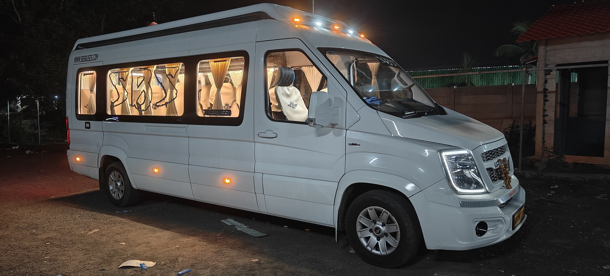

Bhadrachalam's Sri Seetharamachandraswamy temple, set on the banks of the Godavari, is one of the most visited pilgrimage sites in this part of Andhra Pradesh and Telangana. If you're travelling from Rajahmundry, here's how to plan it well.

Distance and travel time
Bhadrachalam is roughly 165–180 km from Rajahmundry depending on your route, and by road that's typically a 4 to 5 hour drive each way. Most pilgrims either do it as a long single-day trip or, more comfortably, as an overnight package combined with a Papikondalu river cruise — since the two sit along a similar corridor.
Two ways to make the trip
- Direct road trip: A private cab straight to Bhadrachalam and back, best if darshan is your only priority and time is tight. See our outstation car rental rates.
- Combined with Papikondalu: Our 2-day, 1-night package covers the Papikondalu cruise on day one and Bhadrachalam darshan (plus a stop at Pochavaram Dam) on day two — the more popular option since it turns a long pilgrimage drive into a fuller trip. Details on the Papikondalu tourism page.
Darshan timings and tips
The temple typically opens early morning and stays open through the evening, with the busiest periods around Sri Rama Navami (the temple's biggest festival) and weekends. If you're travelling on a festival date, plan for longer queues and consider leaving Rajahmundry well before dawn.
Weekday mornings are consistently the quietest time for darshan — if your schedule is flexible, that's when we'd recommend going.
What else is worth seeing nearby
- Pochavaram Dam — a short stop en route, popular for photos of the Godavari backwaters
- Parnasala — believed to be where Rama, Sita and Lakshmana stayed during their exile, a short drive from the main temple
- Papikondalu — if you have an extra day, the river gorge pairs naturally with a Bhadrachalam visit
Planning your yatra
For families and larger temple groups, we handle the full logistics — vehicle sizing for your group, timing the drive around darshan hours, and food and rest stops along the way. See our devotional yatra packages for how we typically structure these trips.
Combine Bhadrachalam with a Papikondalu river cruise for a fuller trip.
View Yatra PackagesTravelling with elderly family members or young children? Tell us on WhatsApp and we'll pace the itinerary accordingly.